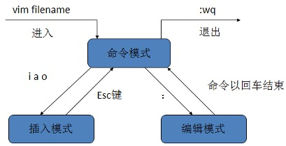
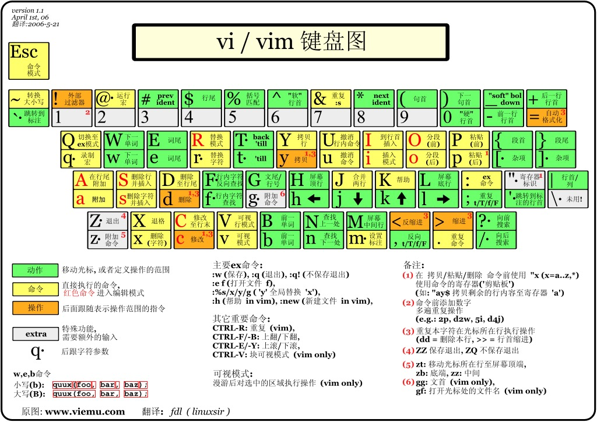

Vim基础

一、Vim简介
所有的 Unix Like 系统都会内建Vi文书编辑器，其他的文书编辑器则不一定会存在，而目前使用最广泛的是 Vim 编辑器，Vim是从Vi发展出来的一个文本编辑器，代码补完、编译及错误跳转等方便编程的功能特别丰富，在程序员中被广泛使用Vim简单的来说，Vi是老式的字处理器，不过功能已经很齐全了，但是还是有可以进步的地方，Vim则可以说是程序开发者的一项很好用的工具；Vim 的官方网站上描述Vim是一个程序开发工具而不是文字处理软件
二、Vim的工作模式
Vim的工作模式有三种模式，分别是：
- 命令模式（Command mode）
- 插入模式（Insert mode）
- 底线命令模式/编辑模式（Last line mode）
三种模式之间的关系如下图所示：

我们使用vim打开一个文件后，就进入了命令模式，这时敲击键盘并不能对文件进行修改，因为系统会识别为命令，敲击$i$、$a$或$o$后，会进入插入模式，这时候我们就可以对文件进行修改；修改完成后，我们就可以按Esc键回到命令模式；而如果要从命令模式转入编辑模式，只需要按:即可，在输入完命令后，回车即可结束并退出文件
三、插入命令
| 命令 | 作用 |
|---|---|
| a | 在光标后附加文本 |
| A（shift + a） | 在本行行末附加文本（行尾） |
| i | 在光标前插入文本 |
| I（shift+i） | 在本行开始插入文本（行首） |
| o | 在光标下插入新行 |
| O（shift+o） | 在光标上插入新行 |
四、定位命令
| 命令 | 作用 |
|---|---|
| :set nu | 设置行号 |
| :set nonu | 取消行号 |
| gg | 到第一行 |
| G | 到最后一行 |
| nG | 到第n行 |
| :n | 到第n行 |
:Set nu


图4.1：使用:set nu后界面的变化
:set nonu
图4.2：使用:set nu后界面的变化
gg

图4.3：使用gg将光标从第4行移动到第1行
G

图4.4：使用G将光标从第1行移动到最后一行
nG
图4.5：使用4G使光标跳转到第4行
:n
图4.6：使用:4使光标跳转到第4行
五、保存和退出命令
| 命令 | 作用 |
|---|---|
| :w | 保存修改 |
| :w new_filename | 另存为指定文件 |
| :w >> a.txt | 内容追加到 a.txt 文件中（文件需存在） |
| :wq | 保存修改并退出 |
| shift+zz(ZZ) | 快捷键，保存修改并退出 |
| :q! | 不保存修改退出 |
| :wq! | 保存修改并退出（文件所有者可忽略文件的只读属性） |
六、删除命令
| 命令 | 作用 |
|---|---|
| x | 删除光标所在处字符（nx删除光标所在处后n个字符） |
| dd | 删除光标所在行（ndd删除n行） |
| :n1,n2d | 删除指定范围的行（eg :1,3d 删除了 123 这三行） |
| dG | 删除光标所在行到末尾的内容 |
| D | 删除从光标所在处到行尾 |
x与nx


图6.1：使用x删除一个字符（中）和使用5x删除5个字符（右图）
dd与ndd


图6.2：使用dd删除第一行（中）和3dd删除三行（右图）
:n1,n2d


图6.3：使用:2,4d删除第二行到第四行
dG


图6.4：使用dG删除第3行到文末的所有内容
D

图6.5：使用D删除第3行的内容
七、复制和剪切命令
| 命令 | 作用 |
|---|---|
| yy、Y | 复制当前行 |
| nyy、nY | 复制当前行以下 n 行 |
| dd | 剪切当前行 |
| ndd | 剪切当前行以下 n 行 |
| p、P | 粘贴在当前光标所在行下（p）或行上（P） |
p与P的区别，如下图中，将光标定位在第4行后，分别使用p（左图）和P（右图）：


八、替换和取消命令
| 命令 | 作用 |
|---|---|
| r | 取代光标所在处字符 |
| R（shift + r） | 从光标所在处开始替换字符，按Esc结束 |
| u | undo,取消上一步操作 |
| ctrl+r | redo,返回到 undo 之前 |
九、搜索和替换命令
| 命令 | 作用 |
|---|---|
| /string | 向后搜索指定字符串 搜索时忽略大小写 :set ic |
| ?string | 向前搜索指定字符串 |
| n | 搜索字符串的下一个出现位置,与搜索顺序相同 |
| N(Shift + n) | 搜索字符串的上一个出现位置,与搜索顺序相反 |
| :%s/old/new/g | 全文替换指定字符串 |
| :n1,n2s/old/new/g | 在一定范围内替换指定字符串 |
:%s/old/new/g


图9.1：使用:%s/CMD/HHH/g将文件中的CMD替换为HHH
-
注意：
%指全文，s指开始，g指全局替换 - 使用替换命令来添加删除注释：
-
:% s/^/#/g：在全部内容的行首添加#号注释 -
:1,10 s/^/#/g：在1到10行的行首添加#号注释
-
十、可视化模式
1、可视字符模式
使用v即可进入可视字符模式，这个模式下相当于鼠标按住左键拖动选定的功能，如下图所示，为进入可视字符模式后，连续按3次向上的方向键得到的界面


图10.1.1：可视字符模式
2、可视行模式
使用V即可进入可视行模式，这个模式下可以选择多行同时操作
3、可视块模式（列模式）
使用ctrl + v即可进入可视块模式，这个模式下可以选择多列同时操作，如下图所示，为进入可视块模式后，连续按2次向右箭头，再连续按3次向下箭头得到的界面，如果再使用d就可以把右图高亮的那一部分删除


图10.1.3：可视块模式
十一、Vim快捷键键位图
下面几张图为Vim的健位图，图片来自https://www.runoob.com/w3cnote/all-vim-cheatsheat.html

结语：Vim博大精深，不仅仅是一款文字编辑器，如果能熟练使用，一定会达到事倍功半的效果.